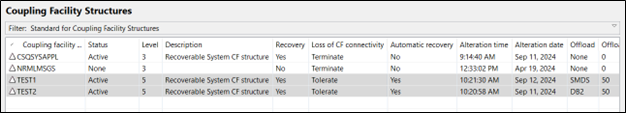
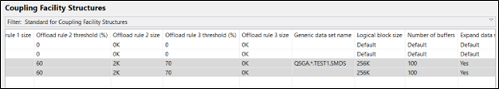
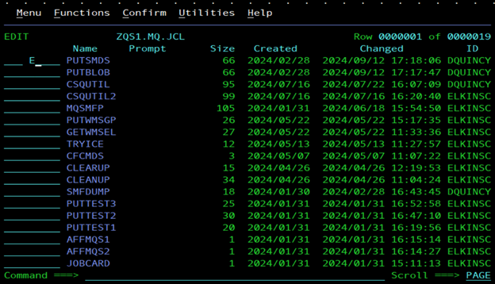
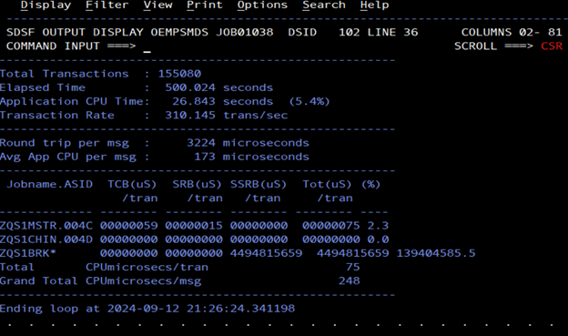

Lab Exercise: Comparing SMDS and DB2 Blobs for queue-sharing
Audience level: knowledge of MQ or z/OS
Skillset: z/OS Systems Programming, MQ Administration
Background
Shared message data sets (SMDS) are the preferred method for offloading large messages in queue-sharing groups. SMDS’s are designed to handle large messages efficiently, so in this exercise, we will test two CF structures, one with SMDS and the other with BLOBs to examine the differences between the two offloading mechanisms.
Overview of exercise
I. Run OEMPUT program against SMDS-enabled CF structure (TEST1)
II. Run OEMPUT program against BLOB-enabled CF structure (TEST2)
III. Compare the output from both
Steps of exercise
I. Run OEMPUT program against SMDS-enabled CF structure (TEST1)
-
Using MQ Explorer, verify that the below configuration is in place. You should see connections to ZQS1, ZQS2, and you should see a QSGA queue-sharing group visible.
-
In MQ Explorer, navigate to the queue-sharing group QSGA’s Coupling Facility Structures by clicking ‘>’ next to the QSGA label then pressing Coupling Facility Structures to display more information.
-
Your structures should look like the following: 
-
Scroll to the right, making sure that all offload rules are the same for TEST1 and TEST2 except for the ‘Offload’ and ‘Group data set name’ fields.

-
Now, navigate to the MQS1 z/OS image.
-
Use option 3.4 to navigate to the ZQS1.MQ.JCL data set. Navigate to PUTSMDS and type an ‘e’ to edit the member.

-
In PUTSMDS, you will see an execution of OEMPUT. This JCL puts a large amount of large messages on our SMDS.QUEUE, defined to TEST1. Which parameters are we using with OEMPUT here?
| Parameter | Description |
|---|---|
| - mZQS1 | Specify target queue manager |
| -qSMDS.QUEUE | Specify target queue |
| -fileDD:MSGIN | Specify messages to be used |
| -ts500 | Specify how long message stream should last (500 seconds) |
| -s650000 | Specify the size of the message, note we are using a message larger than 63KB here, as to necessitate the use of offloading, since large messages can’t be held in the CF list structures. |
| -l10 | Loop MQPUT and MQGET 10 times during execution |
| -cgcpc | Mimic client application program by procressing a commit after both MQPUTs and MQGETs |
| -crlf | Each line in the input message file is used in sequence as message data |
| -rSMDS.QUEUE | Reply-to-queue from which replies will be retrieved (MQGET). If the -r option is omitted, MQGETs will not be issued. |
**Note: If we specified persistent messages here, the contrast between SMDS and BLOBs would be less noticeable because transactions on both sides would have to wait on logging.
- Type ‘submit’ in the command line and press your enter key. You should see a reason code (RC) of 0000. This execution will take a few minutes to complete.
II. Run OEMPUT program against BLOB-enabled CF structure (TEST2)
-
Now, we will repeat the steps to submit another execution of OEMPUT, this time for our queue tied to BLOB storage.
-
Use F3 to back out to the ZQS1.MQ.JCL data set. Place an ‘E’ next to PUTBLOB and press enter to edit the member.
-
As you look through PUTBLOB, navigating up and down the screen using the F7 and F8 keys, you will notice that the only difference between PUTSMDS and PUTBLOB is the queue name. We are keep all other variables constant, especially message size.
-
Type ‘submit’ in the command line and press your enter key. You should see a reason code (RC) of 0000. This execution will take a few minutes to complete.
III. Compare the output from both
-
From the ISPF main menu, type ‘sdsf’ or ‘d’ on the command line and press enter to access the SDSF menu.
-
Here, type ‘ST’ on the command line and press enter to access the status of recent jobs.
-
In our JCL, our OEMPUT jobs were named OEMPSMDS and OEMBLOB, respectively. We can search for all jobs beginning with OEM, but typing in the command line ‘pre OEM*’ and pressing enter.
-
Both jobs should appear in a list. Let’s look at OEMPSMDS first. Place a question mark to the left of the job name and press enter.
-
A list should appear with output on how successful the job was and any output from the job. We are interested in the SYSPRINT output. Place a ‘s’ to the left of SYSPRINT and press enter.
-
Scroll down on the SYSPRINT output until you see the following output. Make not of the Total Transaction value, the Transaction Rate value, and the Avg App CPU per msg value. This gives us information about how many transactions were completed in the allotted time with SMDS storage specified, the efficiency of those transactions, and the CPU consumption required.
If you are unable to see the SYSPRINT screen for any reason, we have prepared sample examples at the end of this lab for reference.
-
Now, let’s check out the same information for BLOB storage. Use F3 to back out twice until you reach the list containing OEMPSMDS and OEMPBLOB.
-
Place a ‘?’ next to the OEMPBLOB job and press enter.
-
Place a ‘s’ next to the SYSPRINT output and press enter.
-
Navigate until you see the Total Transaction value, the Transaction Rate value, and the Avg App CPU per msg value.
If you are unable to see the SYSPRINT screen for any reason, we have prepared sample examples at the end of this lab for reference.
- You have now compared the performance and storage consumption of SMDS and BLOB offloading in our test environment! Hopefully, this helps you see the advantages of using SMDS in terms of throughput. While CPU consumption is higher for SMDS in this test environment,
Figure 1. SMDS performance

Figure 2 BLOB performance